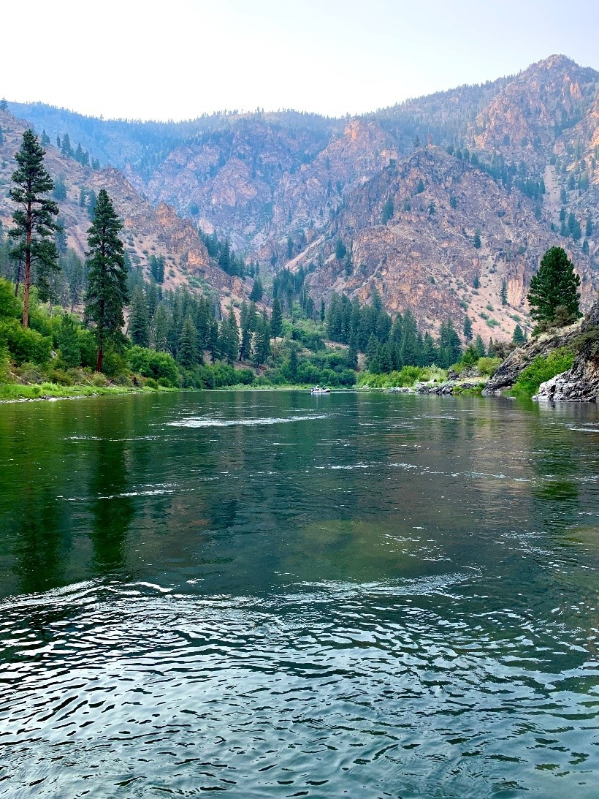
Idaho mountains
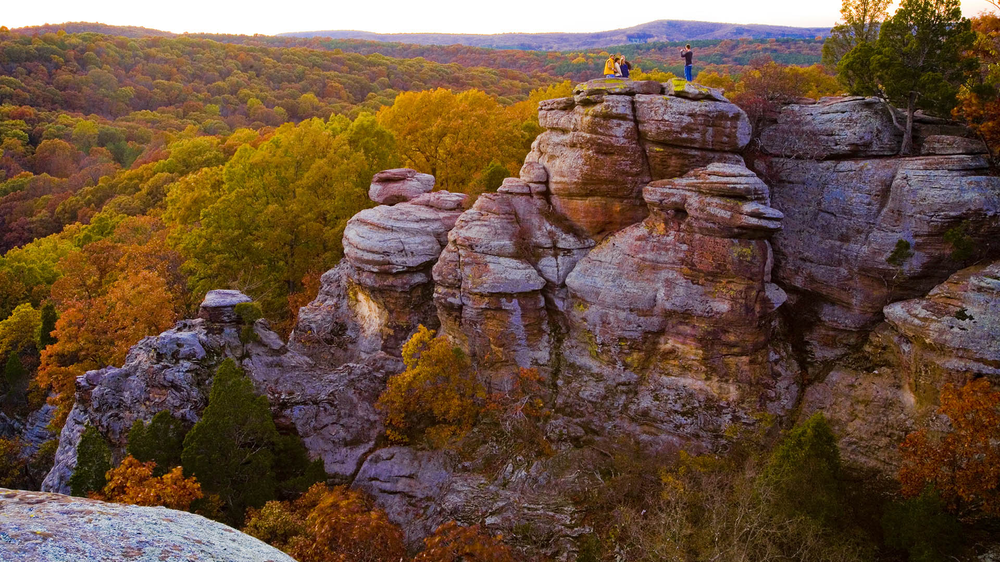
Fall in Illinois
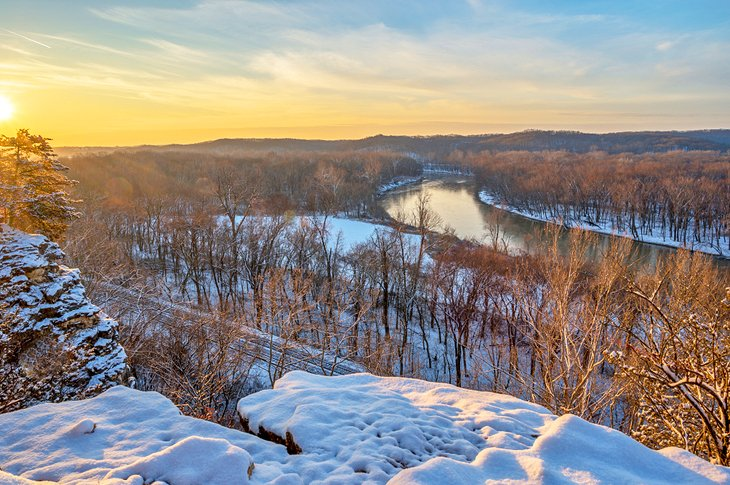
River in Missouri
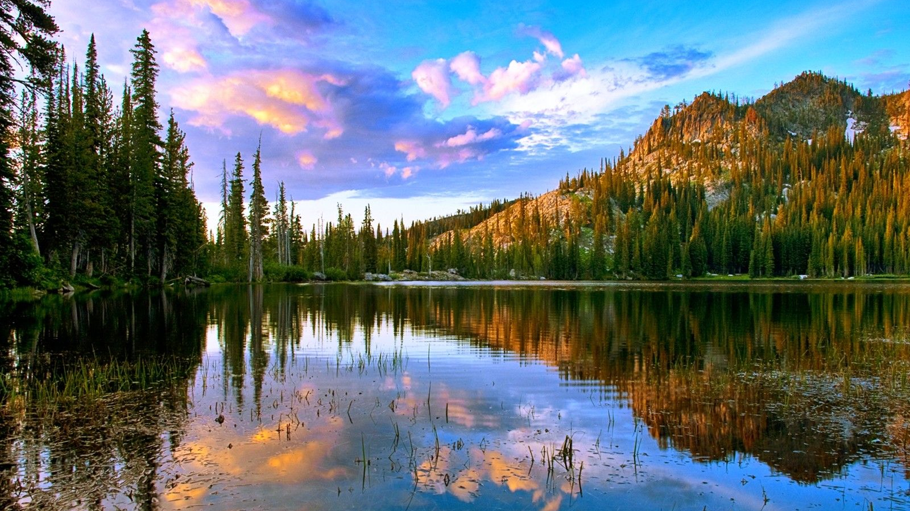
Idaho lake
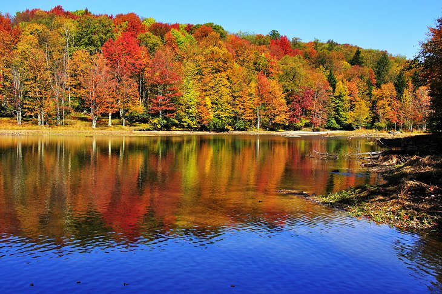
Lake in Pennsylvania
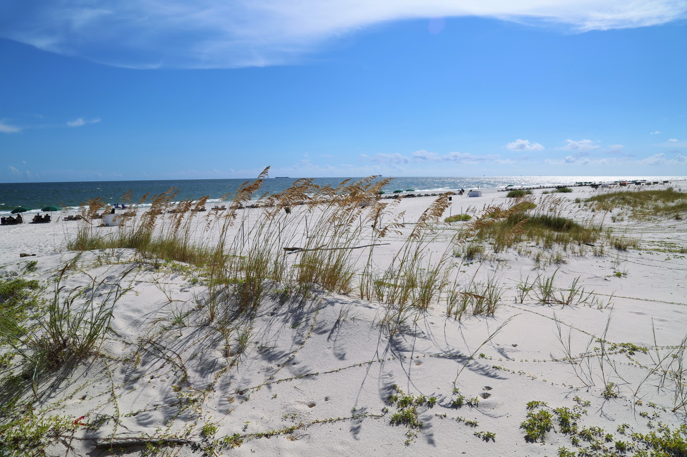
Beach at Gulf Shores, Alabama
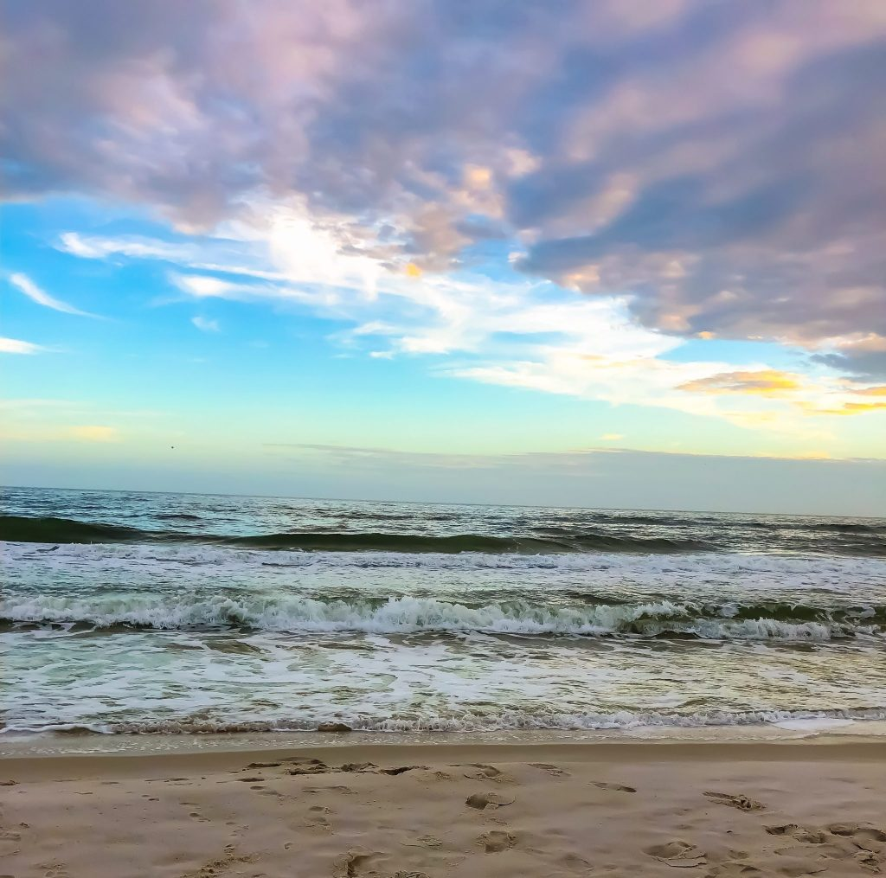
Water at Gulf Shores, Alabama
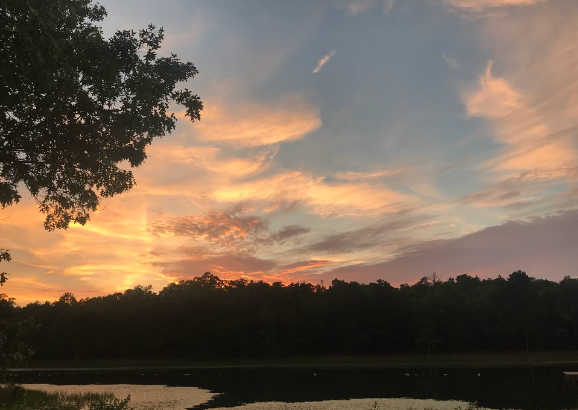
Lake at S-F Scout Ranch, Missouri
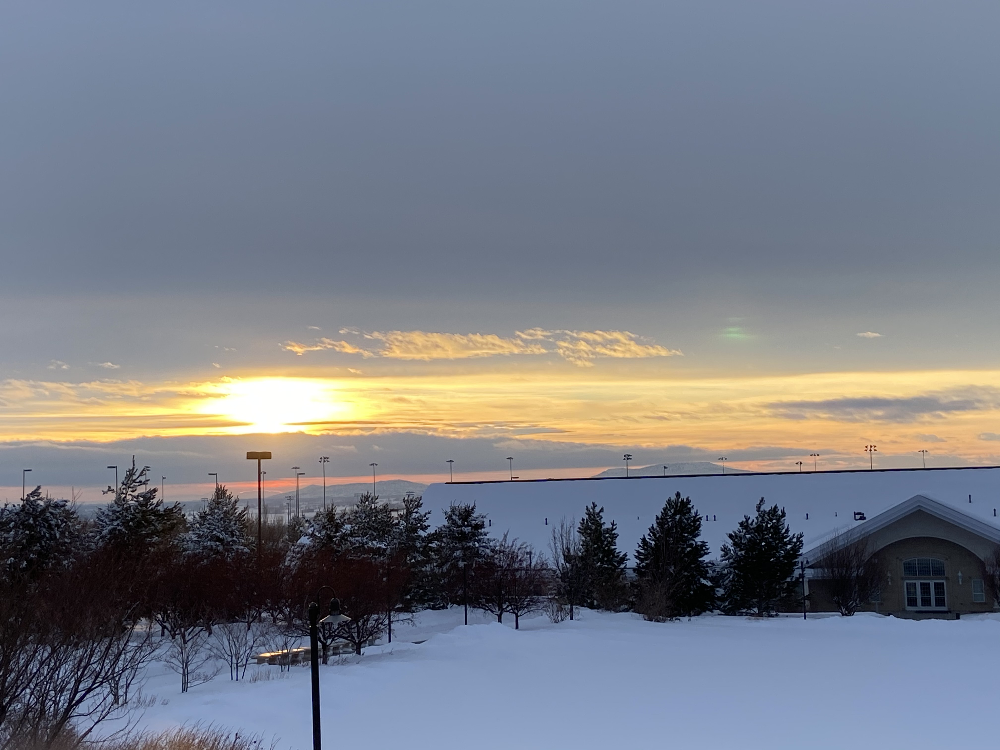
Sunset over snow in Rexburg, Idaho
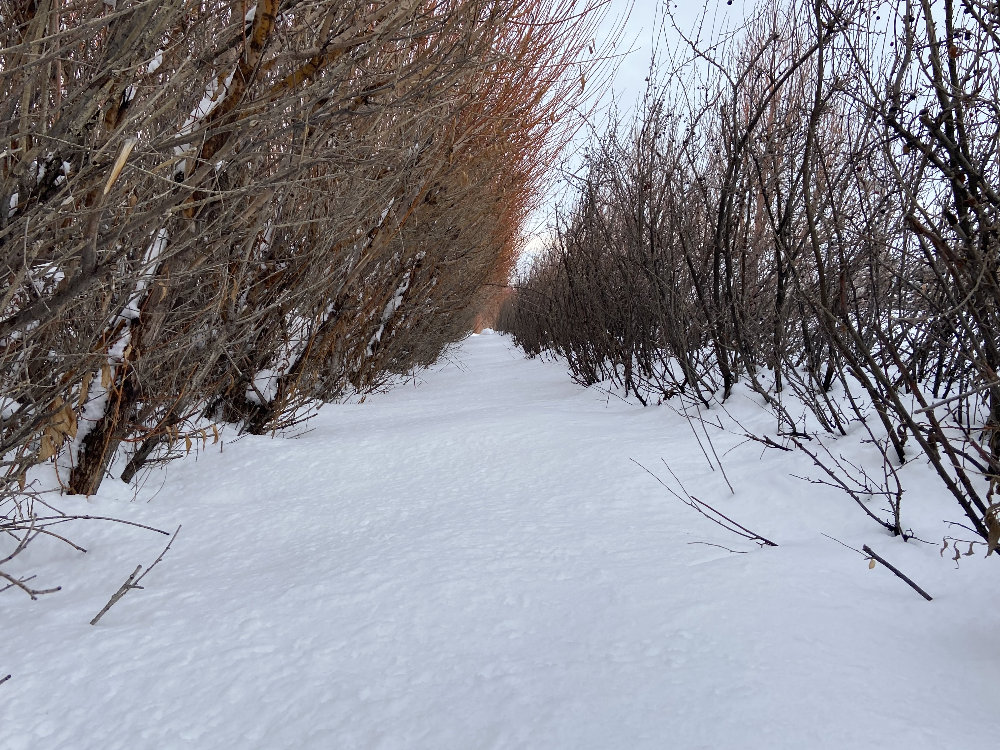
Snow in apple orchards in Rexburg, Idaho
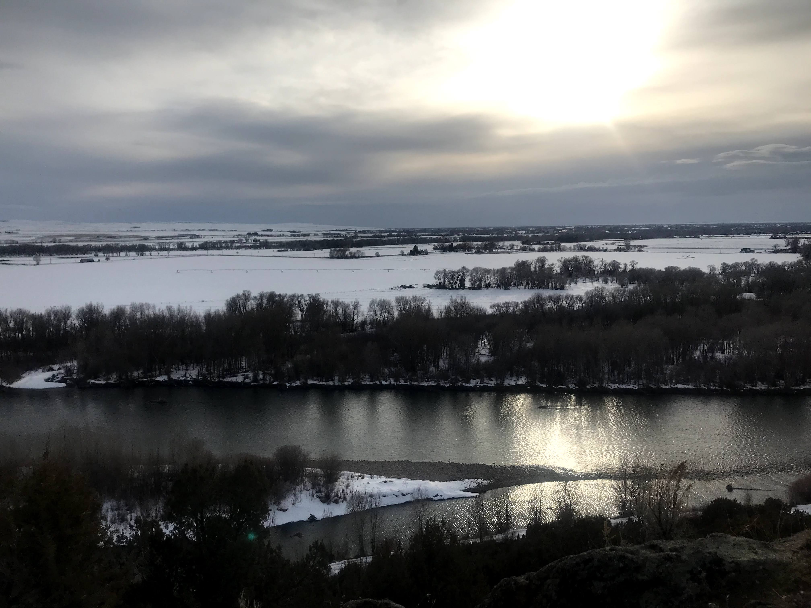
Snow on lake in Rexburg, Idaho
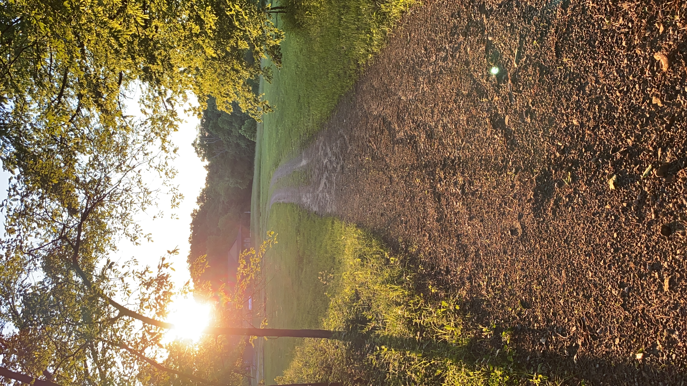
Sunset at camp Vendeventer in Illinois
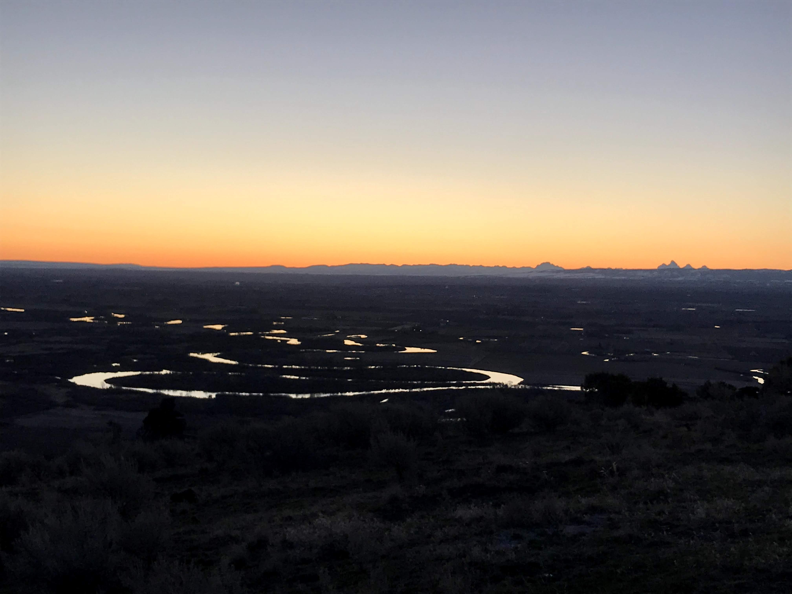
Sunrise over the city of Rexburg, Idaho
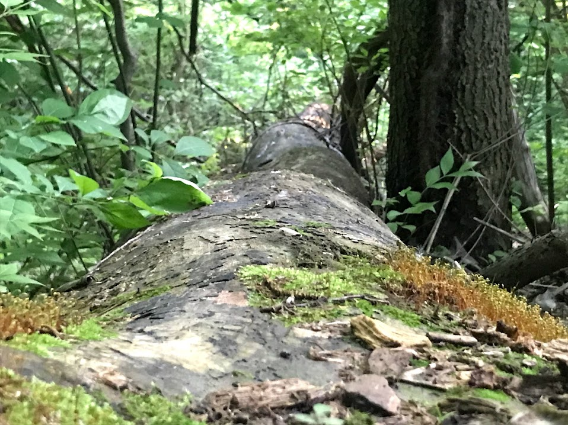
Fallen tree in the woods in Illinois
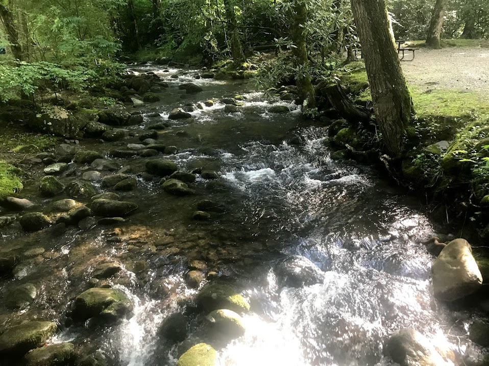
Flowing river in the woods in Illinois